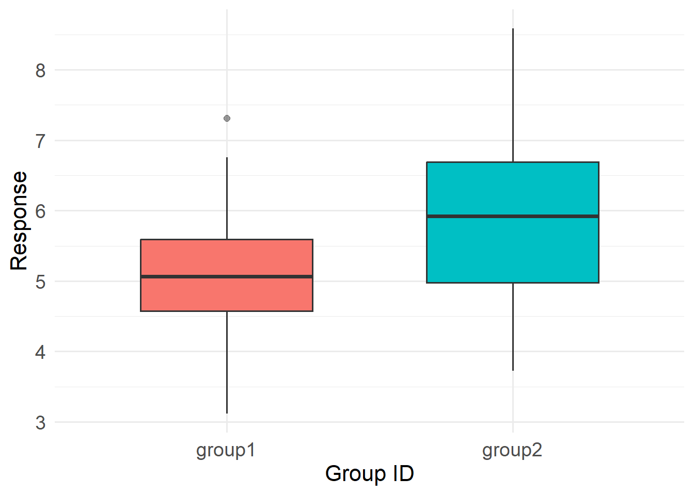

set.seed(100) # this is a random seed that ensures example reproducibility
nval <- 50 # Generate some fake data
group1 <- rnorm(nval, mean=5, sd=1)
group2 <- rnorm(nval, mean=6, sd=1)
d <- data.frame(id=rep(c("group1", "group2"), each=nval),
y=c(group1, group2))intro_glms
Separating signal from noise
Our task, then, is to separate the patterns that carry meaningful information from the variation that does not. This task leads directly to the ideas of signal and noise and to why we use all of these silly models in the first place. So, what exactly are models?
Models are hypotheses about how the data were generated.
5. GLMs versus ANOVAs and t-tests
Then GLMs stop being “advanced statistics” and become:
a formal language for ecological thinking ### Key ideas
- t-tests and ANOVAs are linear models
- They assume:
- Gaussian errors
- identity link
- Group means = predictors with factor coding
Crucial reframing:
> We don’t abandon ANOVAs — we outgrow them.
In this brief example, we provide some simulation code that will (hopefully) convince you that GLMs are pretty much the same kinds of models that you were exposed to in your introductory statistics courses back in the day. As you’ll quickly see, however, GLMs are highly flexible and will allow you to extract the maximum amount of signal from your noisy data.
We will simulate a fake dataset that has two groups (1 and 2). The values for each group follow normal distributions with a standard deviation of 1. The groups differ in their mean values, however, by one unit.

Now, using three models (t-test, ANOVA, and GLM), let us test the hypothesis that these two groups differ. Note that we need to convert the ANOVA’s F-stat to a t-statistic for comparability.
Whew…all of the results are exactly the same (4.119985). Fantastic! Now you can sit back and silently vow never to use a t-test or ANOVA (or anything similar) again. Take a moment (for five) and do that now. Seriously, take a moment (and write to your college stats instructor) and then consult the following table to understand the flexibility of GLMs.
| Functionality / Capability | t-test | ANOVA | GLM |
|---|---|---|---|
| Unbalanced sample | ✅ | ✅ | ✅ |
| Compare more than two groups | ✅ | ✅ | |
| Handle continuous predictors | ✅ | ||
| Handle non-Normal distributions | ✅ | ||
| Complex hierarchical random effects | ✅ | ||
| Use link functions (log, logit, etc.) | ✅ | ||
| Predicted values from model output | ✅ | ||
| Nonlinear extensions | ✅ | ||
| Under current development | ✅ |
Setting the st
Most treatments of GLMs start off examining a model with Gaussian (normally distributed) errors. The Gaussian models has core assumptions that are likely familiar and comfortable to most of you, including:
- The response variable is continuous
- The residual variance is constant (homoscedastic)
- The error distribution is symmetric
- The outcome can take any real value (including negatives)
In many situations, that works beautifully. If we are modeling body mass of adults (why adults?), temperature, or some other roughly symmetric continuous variable, the Gaussian/normal distribution is often appropriate. Simply put, the Gaussian/normal distribution is often the exception rather than the rule:
Most ecological data are not normally distributed.
We regularly collect data on proportions, rates, skewed measurements, zero-heavy processes, and, perhaps most commonly, counts like:
- Number of individuals observed
- Number of detections on a recorder
- Number of nests in a plot
- Number of disease cases
Count distributions –like the Poisson distribution– have their own features, including:
- Values cannot be negative.
- Values are discrete (not continuous)
- They often have variance that increases with the mean
- They are frequently right-skewed
A Gaussian model ignores almost everything about how the data are generated. Therefore, in this section, we will first explore the Poisson GLM, which is designed specifically for count data. It:
- Restricts predictions to non-negative values.
- Allows variance to increase with the mean.
Furthermore, using a Poisson GLM allows you to see the internal architecture of a GLM. It is a bit more difficult to see how a GLM works when using a Gaussian distribution. In a Poisson GLM, the GLM components are clearly delineated:
- The error distribution describes the noise.
- The linear predictor describes the signal.
- The link function connects the expected value of the response to the linear predictor
Because those parts are visibly distinct, the Poisson model makes it much easier to understand what a GLM is actually doing.
The Poisson GLM: Model Specification
For observations \(i = 1, \dots, n\):
1️⃣ Random Component (Noise)
\(Y_i \sim \text{Poisson}(\mu_i)\)
Definitions:
- \(Y_i\): observed count for observation \(i\)
- \(\mu_i\): expected (mean) count for observation \(i\)
For a Poisson distribution:
\(E(Y_i) = \mu_i\)
\(\text{Var}(Y_i) = \mu_i\)
This component specifies how observations vary stochastically around their mean.
It defines the allowable values (non-negative integers) and how variance scales with the mean.
2️⃣ Systematic Component (Signal)
\(\eta_i = \beta_0 + \beta_1 X_i\)
Definitions:
- \(\eta_i\) (eta): the linear predictor
- \(\beta_0\): intercept
- \(\beta_1\): slope parameter
- \(X_i\): predictor value for observation \(i\)
This part represents the structured, directional effect of predictors.
It is deterministic — no randomness appears here.
3️⃣ Link Function (Connector)
\(\log(\mu_i) = \eta_i\)
Equivalently:
\(\mu_i = \exp(\eta_i)\)
The link function connects the linear predictor to the mean of the distribution.
Why the log link?
- It guarantees \(\mu_i > 0\).
- It makes effects multiplicative on the response scale.
- It keeps linearity on a scale where it makes sense.
Compact Form
\(Y_i \sim \text{Poisson}(\mu_i)\)
\(\log(\mu_i) = \beta_0 + \beta_1 X_i\)
Big Picture
A GLM separates:
- Signal → why the mean changes (linear predictor)
- Noise → how observations vary around that mean (distribution)
- Link → how the structured signal maps to biologically allowable values
That separation is the real power of the GLM framework.